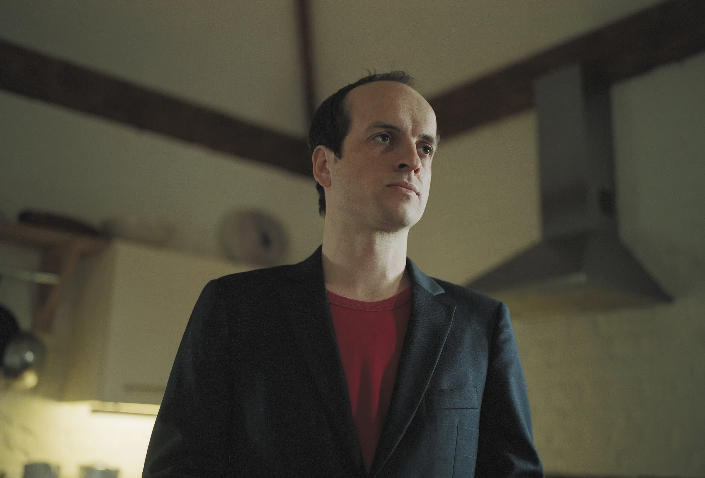
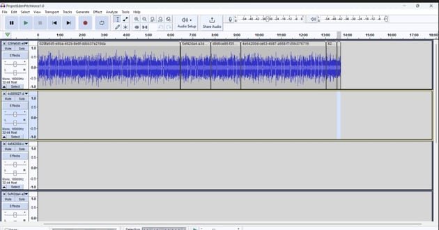

A sound art experience
McLean Mylymok

Mattew Herbert is a Britain sound artist and musician
Generate his music from documentary and feild recordings
The sound he produces is entertaining, but it draws attention to social issues
"I felt like sound offered me an experience I didn't have before."(Isaza).
In Herbert's view, we get an extra dimension with sound. We see photographs of different world events, but we don't hear what's going on. We don't get to experience it aurally.
"you point your microphone that’s the story you tell"(Isaza)
Microphones act as a pen, and you are able to manipulate and augment it to craft the story you want to tell

Herbert's primary tool of choice is the sampler. In his opinion, it is the perfect tool for someone interested in music, but are lazy to learn the whole gambit of music production. He can load sounds into the system and manipulate them.
He is strongly against music production software like DAWs. It is too easy to create flashy music without much thought
In response to this, he came up with the PCCOM. This means that he physically has to capture all components of a musical composition
All the sounds on this album were made from commercially made items (see next slide)
The central theme of this piece is capitalism
At the time of release, people could order a copy free of cost . Even now, you can find freely-avalibe copies online.
This album (along with most of Herbert's work) is "open source" meaning that people can tear it apart and remix it.
A Big Mac meal
Hearsay CD (UK Star Academie)
The Sun newspaper
A Phelips black and white TV
A Bugs Life DVD
Starship Troopers on VHS
10 Marlboro and a bottle of Bacardi
…and more
Herbert's work shows that music does not have to include instruments. There is source material all around us.
The microphone can say a lot. Depending on how you manipulate it, you can craft a really interesting narrative